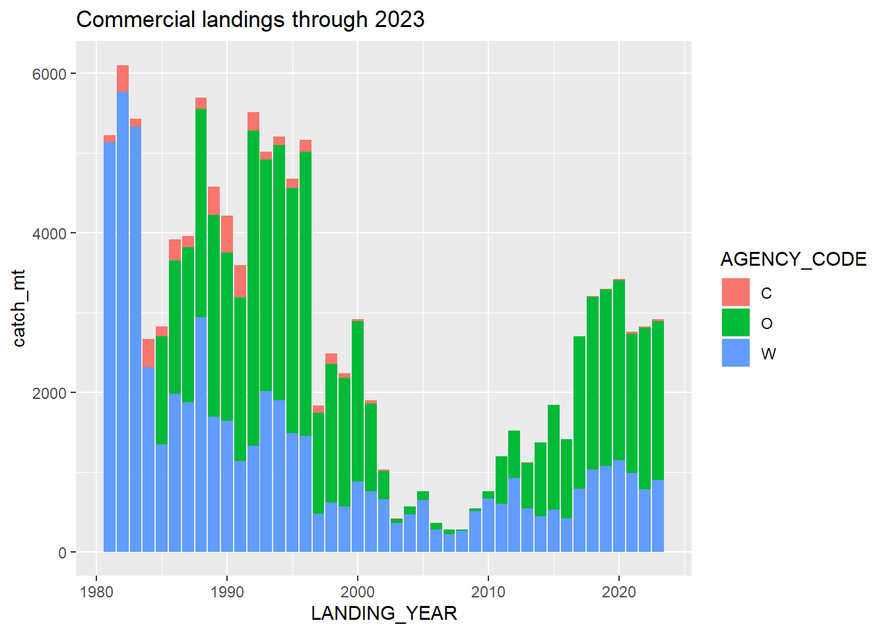

Data summary
Commercial landings
Washington
| LANDING_YEAR | catch_mt |
|---|---|
| 1981 | 5128.3 |
| 1982 | 5769.3 |
| 1983 | 5326.6 |
| 1984 | 2311.8 |
| 1985 | 1347.0 |
| 1986 | 1982.7 |
| 1987 | 1876.9 |
| 1988 | 2943.5 |
| 1989 | 1689.3 |
| 1990 | 1639.7 |
| 1991 | 1140.8 |
| 1992 | 1327.4 |
| 1993 | 2014.4 |
| 1994 | 1898.8 |
| 1995 | 1482.6 |
| 1996 | 1451.4 |
| 1997 | 476.5 |
| 1998 | 616.9 |
| 1999 | 563.3 |
| 2000 | 877.6 |
| 2001 | 756.3 |
| 2002 | 659.9 |
| 2003 | 358.1 |
| 2004 | 467.3 |
| 2005 | 651.0 |
| 2006 | 280.3 |
| 2007 | 220.3 |
| 2008 | 262.4 |
| 2009 | 506.3 |
| 2010 | 664.6 |
| 2011 | 601.1 |
| 2012 | 924.1 |
| 2013 | 538.3 |
| 2014 | 442.0 |
| 2015 | 528.3 |
| 2016 | 417.2 |
| 2017 | 790.0 |
| 2018 | 1026.3 |
| 2019 | 1070.2 |
| 2020 | 1141.6 |
| 2021 | 986.9 |
| 2022 | 783.3 |
| 2023 | 893.5 |
WDFW has alerted the STAT these do not include all tribal catches in recent years. Tribal catches are:
| LANDING_YEAR | catch_mt |
|---|---|
| 1984 | 11.0 |
| 1987 | 0.7 |
| 1988 | 0.9 |
| 1989 | 0.1 |
| 1990 | 1.8 |
| 1991 | 1.6 |
| 1992 | 0.3 |
| 1993 | 3.5 |
| 1994 | 4.3 |
| 1995 | 0.2 |
| 1996 | 0.6 |
| 1997 | 1.1 |
| 1998 | 6.2 |
| 1999 | 16.0 |
| 2000 | 35.4 |
| 2001 | 98.7 |
| 2002 | 259.9 |
| 2003 | 273.0 |
| 2004 | 352.9 |
| 2005 | 542.1 |
| 2006 | 171.9 |
| 2007 | 76.1 |
| 2008 | 223.3 |
| 2009 | 451.3 |
| 2010 | 539.4 |
| 2011 | 440.5 |
| 2012 | 511.6 |
| 2013 | 392.0 |
| 2014 | 198.5 |
| 2015 | 385.0 |
| 2016 | 244.5 |
| 2017 | 244.3 |
| 2018 | 123.3 |
| 2019 | 112.9 |
| 2020 | 14.5 |
| 2021 | 47.1 |
| 2022 | 15.0 |
| 2023 | 9.6 |
Oregon
These were provided directly to the STAT
California
| LANDING_YEAR | catch_mt |
|---|---|
| 1981 | 94.4 |
| 1982 | 331.4 |
| 1983 | 105.3 |
| 1984 | 357.7 |
| 1985 | 120.2 |
| 1986 | 268.9 |
| 1987 | 141.6 |
| 1988 | 144.5 |
| 1989 | 353.9 |
| 1990 | 466.4 |
| 1991 | 405.8 |
| 1992 | 231.8 |
| 1993 | 102.3 |
| 1994 | 104.6 |
| 1995 | 115.9 |
| 1996 | 153.2 |
| 1997 | 89.6 |
| 1998 | 132.6 |
| 1999 | 60.9 |
| 2000 | 21.0 |
| 2001 | 41.2 |
| 2002 | 16.0 |
| 2003 | 1.0 |
| 2004 | 3.7 |
| 2005 | 0.8 |
| 2006 | 0.8 |
| 2007 | 1.4 |
| 2008 | 1.7 |
| 2009 | 0.6 |
| 2010 | 0.2 |
| 2011 | 0.3 |
| 2012 | 0.3 |
| 2013 | 0.8 |
| 2014 | 0.7 |
| 2015 | 4.3 |
| 2016 | 1.3 |
| 2017 | 4.0 |
| 2018 | 11.0 |
| 2019 | 11.2 |
| 2020 | 14.0 |
| 2021 | 28.1 |
| 2022 | 19.2 |
| 2023 | 20.7 |
Note this is for catch landed into Del Norte and Humboldt counties only.
Recreational landings
Washington
Modern catches:
| RECFIN_YEAR | Dead_Catch_mt |
|---|---|
| 1990 | 13.5 |
| 1991 | 31.8 |
| 1992 | 32.9 |
| 1993 | 41.7 |
| 1994 | 19.3 |
| 1995 | 14.3 |
| 1996 | 20.4 |
| 1997 | 24.5 |
| 1998 | 41.6 |
| 1999 | 14.4 |
| 2000 | 18.1 |
| 2001 | 11.7 |
| 2002 | 3.2 |
| 2003 | 11.2 |
| 2004 | 17.4 |
| 2005 | 14.0 |
| 2006 | 8.8 |
| 2007 | 14.1 |
| 2008 | 13.8 |
| 2009 | 28.3 |
| 2010 | 42.9 |
| 2011 | 53.2 |
| 2012 | 18.6 |
| 2013 | 23.2 |
| 2014 | 42.3 |
| 2015 | 26.0 |
| 2016 | 36.6 |
| 2017 | 47.3 |
| 2018 | 38.1 |
| 2019 | 48.4 |
| 2020 | 59.9 |
| 2021 | 61.5 |
| 2022 | 68.6 |
Questions:
- There are three values for
RECFIN_WATER_AREA_NAME: Estuary, Ocean, and Canada. Which should be included? Above table excludes Canada. - 2023 has a number of instances where
RECFIN_WEEKis zero, and one instance where is it missing. In the instance where it is missing, there is no estimate of catch in mt.
Historical catches:
| RECFIN_YEAR | Dead_Catch_num |
|---|---|
| 1967 | 38119 |
| 1975 | 22918 |
| 1976 | 31634 |
| 1977 | 22340 |
| 1978 | 19513 |
| 1979 | 14676 |
| 1980 | 16954 |
| 1981 | 12535 |
| 1982 | 7244 |
| 1983 | 12142 |
| 1984 | 6102 |
| 1985 | 5292 |
| 1986 | 16273 |
| 1987 | 8141 |
| 1988 | 7311 |
| 1989 | 6639 |
Oregon
These were provided directly to the STAT
California
| RECFIN_YEAR | Dead_Catch_mt |
|---|---|
| 2005 | 0.2 |
| 2006 | 0.2 |
| 2007 | 0.5 |
| 2008 | 0.3 |
| 2009 | 1.0 |
| 2010 | 0.3 |
| 2011 | 0.5 |
| 2012 | 0.7 |
| 2013 | 0.7 |
| 2014 | 0.3 |
| 2015 | 0.6 |
| 2016 | 0.2 |
| 2017 | 0.5 |
| 2018 | 1.0 |
| 2019 | 1.3 |
| 2020 | 0.5 |
| 2021 | 1.1 |
| 2022 | 1.2 |
| 2023 | 3.1 |
Note that 2020 proxy catches are missing, and we will need historical recreational catches that are not on RecFIN.
Commercial length data
Initial sample sizes after running PacFIN.Utilities::cleanPacFIN():
AGE_METHOD1 AGE_METHOD2 AGE_METHOD3 Age method for best age n
1 B B B B 2346
2 B B <NA> 1
3 B B <NA> B 4373
4 B <NA> <NA> 32
5 B <NA> <NA> B 134303
6 L <NA> <NA> L 3
7 S <NA> <NA> S 17942
8 T <NA> <NA> T 2
9 <NA> <NA> <NA> <NA> 70424| year | CA | OR | WA |
|---|---|---|---|
| 1968 | 0 | 0 | 1225 |
| 1969 | 0 | 0 | 1852 |
| 1970 | 0 | 0 | 981 |
| 1971 | 0 | 0 | 1087 |
| 1972 | 0 | 0 | 1252 |
| 1973 | 0 | 0 | 697 |
| 1974 | 0 | 0 | 350 |
| 1975 | 0 | 0 | 458 |
| 1976 | 0 | 0 | 2776 |
| 1977 | 0 | 0 | 778 |
| 1978 | 132 | 0 | 1876 |
| 1979 | 41 | 0 | 1599 |
| 1980 | 74 | 0 | 3705 |
| 1981 | 61 | 607 | 3900 |
| 1982 | 184 | 1499 | 3496 |
| 1983 | 278 | 199 | 2366 |
| 1984 | 704 | 1098 | 3200 |
| 1985 | 261 | 2104 | 3500 |
| 1986 | 181 | 1156 | 2992 |
| 1987 | 145 | 1891 | 2046 |
| 1988 | 37 | 1670 | 1650 |
| 1989 | 230 | 2055 | 1650 |
| 1990 | 192 | 1802 | 1875 |
| 1991 | 265 | 1296 | 1950 |
| 1992 | 737 | 2490 | 1700 |
| 1993 | 261 | 2022 | 1800 |
| 1994 | 847 | 2641 | 3562 |
| 1995 | 436 | 2242 | 3505 |
| 1996 | 660 | 2259 | 3154 |
| 1997 | 277 | 4092 | 2501 |
| 1998 | 618 | 3235 | 2105 |
| 1999 | 350 | 3578 | 2195 |
| 2000 | 141 | 3005 | 2283 |
| 2001 | 204 | 2832 | 2045 |
| 2002 | 105 | 1538 | 1663 |
| 2003 | 41 | 701 | 1629 |
| 2004 | 64 | 1341 | 1783 |
| 2005 | 67 | 980 | 1173 |
| 2006 | 100 | 1251 | 968 |
| 2007 | 106 | 1196 | 2515 |
| 2008 | 41 | 585 | 1841 |
| 2009 | 60 | 855 | 1450 |
| 2010 | 2 | 1618 | 1614 |
| 2011 | 72 | 1816 | 1415 |
| 2012 | 131 | 1915 | 2231 |
| 2013 | 203 | 1269 | 1275 |
| 2014 | 219 | 1898 | 1309 |
| 2015 | 196 | 2393 | 1760 |
| 2016 | 199 | 3145 | 1587 |
| 2017 | 383 | 3040 | 2470 |
| 2018 | 359 | 2950 | 1651 |
| 2019 | 334 | 2782 | 1146 |
| 2020 | 168 | 1932 | 551 |
| 2021 | 603 | 1815 | 1157 |
| 2022 | 184 | 2443 | 1469 |
| 2023 | 0 | 2145 | 1415 |
Note that California lengths are not available for 2023.
While running PacFIN.Utilities::cleanPacFIN(), it noted that 20 Washington ages in 1991 were double read, the second reader was not recorded, the first and second ages differed, and no final age was determined.